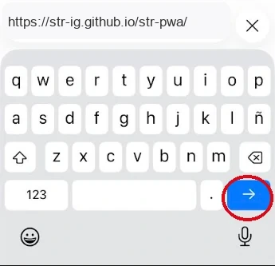
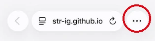
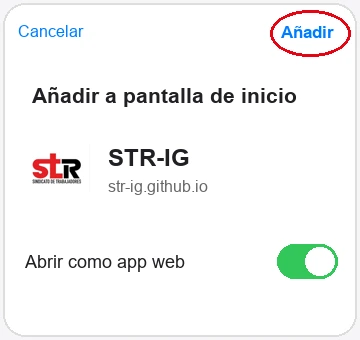

Instala STR-IG
Elige tu móvil para instalar la app.
Instalar en Android
- Abre este enlace en Google Chrome.
- Pulsa el menú ⋮ y elige Instalar aplicación o Añadir a pantalla de inicio.
- Confirma y abre STR-IG desde el nuevo icono.
Si estás dentro de otra aplicación, usa su menú para abrir el enlace en Chrome o copia esta dirección:
Antes de empezar
Para seguir esta guía, abre el enlace en Safari. Si estás dentro de WhatsApp, Instagram u otra app, puede que no aparezca la opción de instalar.
1. Copia el enlace
Pulsa el botón y el enlace se copiará. Si ya estás en Safari con la página abierta, salta al paso 3.
2. Ábrelo en Safari
Abre Safari (el icono de la brújula azul). Mantén pulsada la barra de direcciones, elige Pegar y pulsa Ir.

Ejemplo de dónde pegar el enlace y pulsar Ir.
3. Abre el menú y pulsa Compartir
En Safari, pulsa los tres puntos (…) de abajo a la derecha, señalados en rojo.

Después elige Compartir, identificado por el cuadrado con una flecha hacia arriba.

Referencia del icono Compartir. En algunas versiones aparece directamente en la barra; en otras, dentro del menú de tres puntos.
4. Añade a pantalla de inicio
En el menú Compartir, desliza hacia abajo y pulsa Añadir a pantalla de inicio. Si no aparece, busca Editar acciones al final de la lista.

5. Confirma con Añadir
Deja «Abrir como app web» activado si aparece. Pulsa Añadir, arriba a la derecha.

Referencia del botón Añadir.
¡Listo!
Ya tienes el icono de STR-IG en tu pantalla de inicio. Ábrela siempre desde ese icono para que funcione como una app.